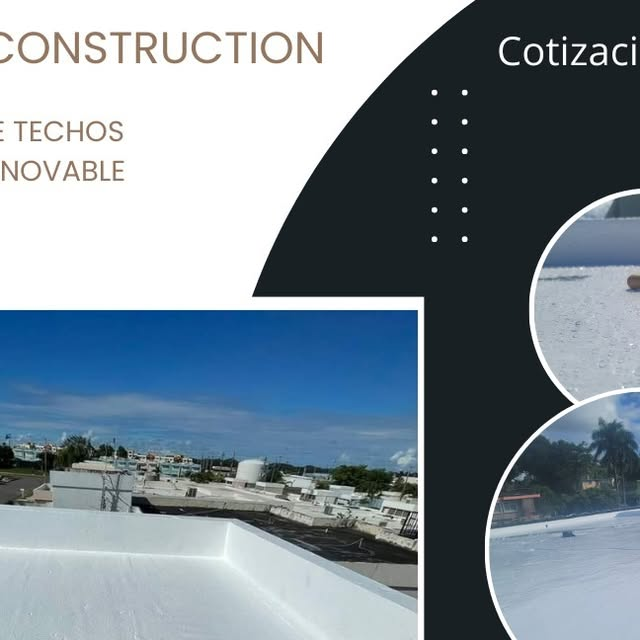
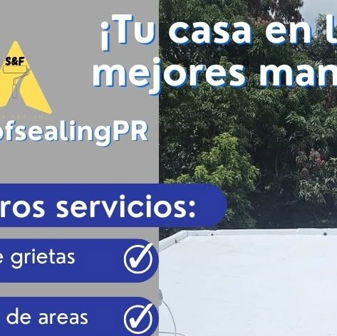
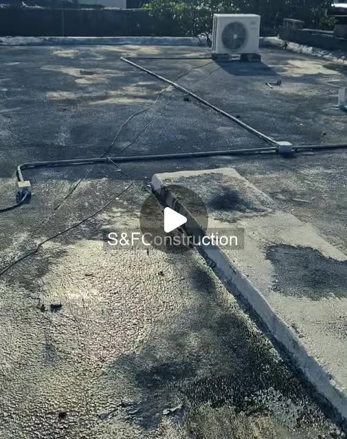
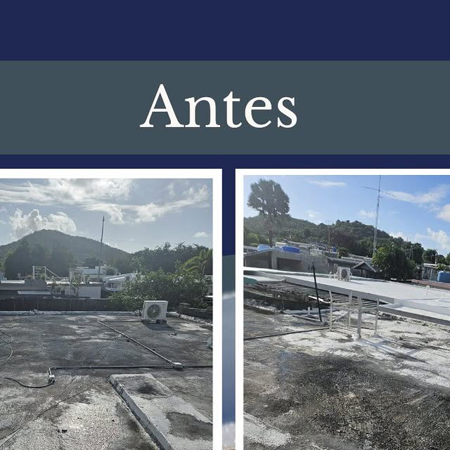
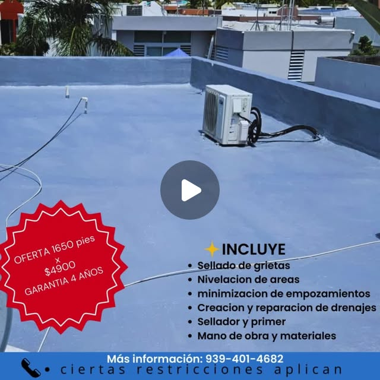
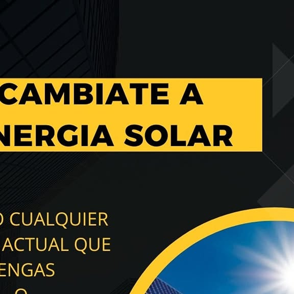
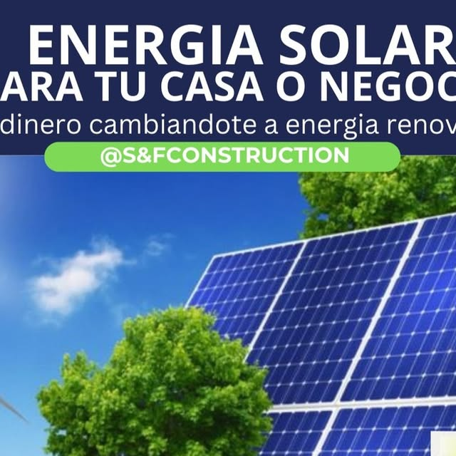
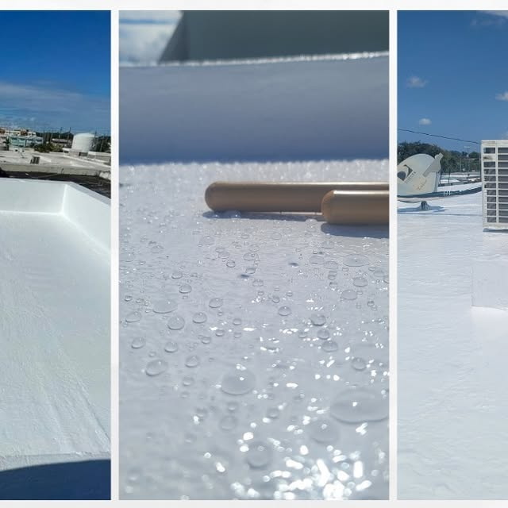
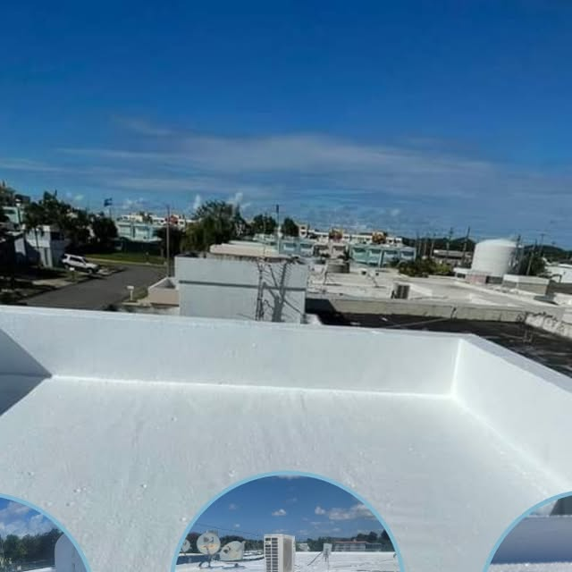

Guayama · Sur de Puerto Rico
S&F RoofsealingPR: sellado de techos con elastomérico en Guayama y el sur. Garantía del trabajo y cotización por WhatsApp.
Trabajos reales
Cada foto es un trabajo real de sellado de techos. Desliza la cinta y toca cualquier foto para verla grande.









← desliza para ver los trabajos →
Lo que hacemos
Servicios de S&F RoofsealingPR en Guayama · Sur de Puerto Rico. Cotiza por WhatsApp: sin compromiso.
Protección impermeable aplicada con rolo y brocha para techos residenciales.
SelladoPreparación profesional del techo antes de sellar, con lavado a presión.
LimpiezaCorrección y sellado de grietas para frenar filtraciones desde el origen.
SelladoCapa base que agarra el sellador y extiende la vida del sistema.
SelladoProtección documentada por años, con antes y después reales de cada trabajo.
GarantíaAsí de fácil
Escríbenos por WhatsApp con fotos de tu techo. Estimado gratis y sin compromiso.
Visitamos tu propiedad, medimos el techo y diagnosticamos filtraciones y puntos débiles.
Lavado a presión, reparación de grietas y acondicionamiento de la superficie.
Aplicamos el sistema de sellado completo con acabado profesional que dura años.
 Guayama · Sur de Puerto Rico
Guayama · Sur de Puerto Rico
Quiénes somos
S&F RoofsealingPR es sellado de techos con elastomérico en Guayama, Puerto Rico. Impermeabilización profesional con garantía del trabajo.
Cotiza por WhatsApp: nos dices qué necesita tu techo y te orientamos sin compromiso.
Preguntas frecuentes
Estamos en Guayama, Puerto Rico.
Sellado de techos con elastomérico y más: Sellado con elastomérico, Lavado de techo, Corrección de grietas.
Escríbenos por WhatsApp al 939-401-4682 o llena el formulario de contacto y te respondemos por WhatsApp.
Sí, síguenos en Instagram como @sfroofsealingpr.
Sí, garantía de 3 a 12 años según el sistema aplicado. Llámanos al 939-401-4682.
Cotiza tu techo
Teléfono / WhatsApp
939-401-4682Cobertura
Guayama · Sur de Puerto Rico
Llena esto y te abrimos WhatsApp con tu mensaje listo.
Cotización gratis: dinos tu pueblo y qué le pasa a tu techo. Te orientamos sin compromiso.
Esta página la creó ManuPro. Escríbenos hoy mismo y cotiza la website profesional de tu negocio.
Cotizar por WhatsApp